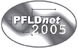

PFLDnet 2005 is sponsored by:
|

Third International Workshop on Protocols for Fast Long-Distance Networks February 3,4 2005 Laboratoire de l'Informatique du Parallélisme Ecole Normale Supérieure - LYON - FRANCE |
||
|
|
Topics of interest
include and are not limited to: · Protocol issues in fast long-distance networks · TCP enhancements and their comparison · Novel data transport protocols designed for new application services · RDMA over WANs · Effects of shaping on TCP and UDP traffic · Effects of striping and multistreaming · Bulk-data transfer applications both TCP and non-TCP based · Data replication and multicasting strategies and protocols · Simulation-based results · Experiments on real networks and actual measurements · Experience with different types of hardware (PCs, routers, switches, Gigabit Ethernet cards, etc.) Important Dates Ext. Abstract Submission Deadline: Oct 15 Reviews due: Nov 19 Acceptance Notification: Dec 5 Final paper submission: Jan 21 Workshop: 3-4 february |
Fast long-distance
networks (i.e., networks operating at 622 Mbit/s, 2.5 Gbit/s, or 10 Gbit/s
and spanning several countries or states) are now becoming commonplace. More
and more researchers now routinely transfer between 10 GB and multi-TB datasets
over gigabit networks. Application domains for such massive transfers include
data-intensive Grids (e.g., in Particle Physics, Earth Observation, Bio
informatics, and Radio Astronomy), database mirroring for Web sites (e.g.,
in e-commerce), and push-based Web cache updates.
Although the network infrastructure is now in place, or will soon be, the transport and application protocols available to date perform rather poorly over such networks. Current versions of TCP, for instance, recover very slowly from packet loss when the RTT and the link capacity are large, thus requiring a large congestion window for high throughput. A number of research teams have begun investigating these protocol issues. The First International Workshop on Protocols for Fast Long-Distance Networks and the Second International Workshop on Protocols for Fast Long-Distance Networks were very successful in bringing together many researchers from the U.S., Asia and Europe who are working on these problems. This workshop will continue this tradition, and provide a perfect setting for researchers in this area to exchange ideas and experience. This single-track workshop will provide researchers and technologists with a focused, highly interactive opportunity to present, discuss and exchange experience on leading research, development and future directions in high performance transport and application protocols (TCP, UDP, HTTP, FTP, etc.) over fast long-distance networks. This year, a particular emphasis will be on End Systems Issues (hardware and software). Each day will start with a plenary talk and end with a panel. In between, formal presentations of papers will be followed by extensive and informal Q&A sessions. Authors are invited to submit unpublished extended abstract for consideration. In order to facilitate discussions, attendance will be limited to 60 participants. Please register early to ensure your participation. Depending on the number of people who register, we may need to restrict the number of people from a given organization to allow for a broader representation of the research community. Registration will open on October 1, 2004. Call For Papers: Participants wishing to present a paper should upload a four-pages extended abstract to the submission web page by October 15 (2004). Authors whose abstracts are selected for presentation will have the option to submit a full paper, to be published on the PFLDnet 2005 web site and in the PFLDnet 2005 proceedings. We may try to collect the best papers for a special edition of a journal, if the authors are interested. | |
|
PFLDnet 2005 is sponsored by: |
||||